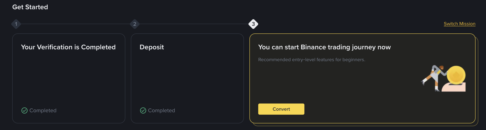

Глава 2. Верификация личности (KYC)
Верификация — это подтверждение ваших данных. Без этого этапа биржа не позволит вам совершать сделки и выводить деньги на карту. Это стандартная процедура для защиты ваших финансов.
Какие документы подготовить?
Для успешного прохождения проверки вам понадобится один из следующих документов в оригинале (не копия):
- Заграничный паспорт (наиболее рекомендуемый вариант).
- ID-карта или внутренний паспорт нового образца.
- Водительское удостоверение.
Документ должен быть действующим, с четкой фотографией и без физических повреждений.
Процесс проверки (Liveness Check)
После загрузки фото документа система попросит вас пройти проверку через камеру телефона или ноутбука.

- Снимите головные уборы (кепки, шапки).
- Снимите очки (даже если вы их носите постоянно).
- Убедитесь, что в комнате достаточно света.
- Не закрывайте лицо волосами.
Просто следуйте инструкциям на экране: система может попросить вас моргнуть, улыбнуться или медленно повернуть голову.
Сроки проверки
Обычно проверка занимает от 15 минут до нескольких часов. Как только данные будут проверены, вы получите уведомление, а в профиле появится статус "Verified" (Верифицирован).